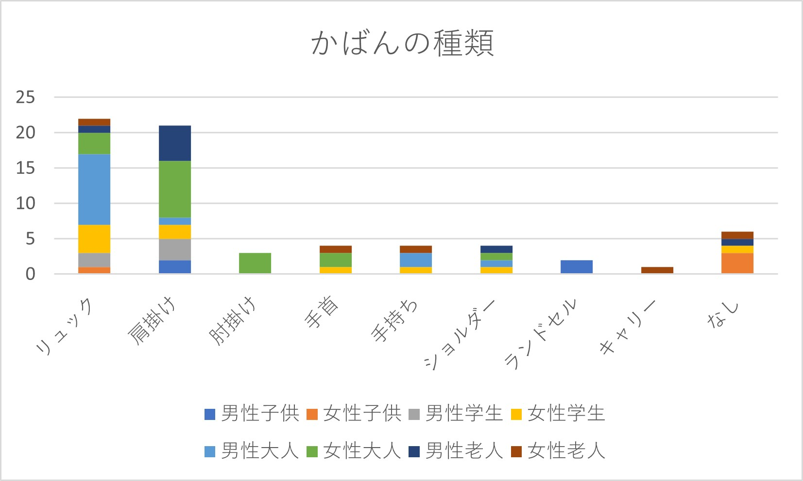
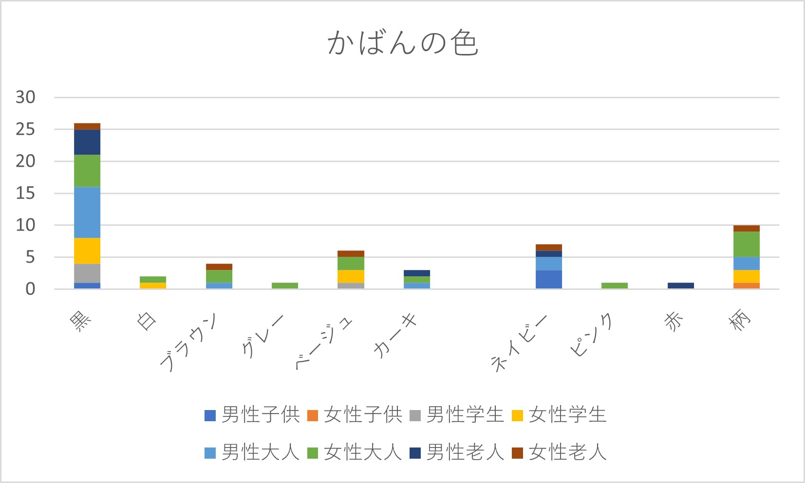

観察 9班：かばん（衣について）
※年齢、性別は調べる前提…
対象者： 「子ども」「学生」「大人（社会人）」「老人」
＜結果＞
大学校舎入り口付近
観察時間：30分程度


結果からわかること…
男性の学生は圧倒的に黒のリュックの人が多くいた。それに対して、女性の学生は黒のリュックと同じくらい、白のトートバックで肩にかけている人が多いことがわかる。
学生の男女ともに、かばんを肩にかけている人の割合が高い。その理由としては、パソコンや教材などの重いものを持ち歩くので肩が一番負担が軽減されるのではないかと思う。
かばんの色として男性は、黒、白、紺。女性は黒、白、ベージュとないる。男女ともに人気の色の1位、2位は黒と白でしたが、3位からは男女で違いが出た結果となった。
また、女性はピンクや赤、柄が入っているものなど色に幅がありました。
全体としては、リュックを使用している人が多く、色は黒や白などのシンプルなかばんが人気でした。
MARK IS みなとみらいショッピングモールの前
観察時間：30分程度
 
結果からわかること…
かばんの種類として最も多かったのは、リュックと肩掛けのトートバックでした。その中で、男性大人の割合が大きい。
肩掛けのトートバックは女性大人が多い傾向でしたが、2番目には、男性老人でこの結果にとても驚いた。
観察日の10月19日は平日の午後だったので、やはり子供の割合が少なかったがランドセルを背負っている小学生が2人いた。
親子で歩いている子供は、かばんを持たないことが多いことがグラフから読み取れる。
持ち方も人それぞれで、リュックを片方だけ肩にかけて背負っている人もいた。
かばんの色としては、やはり黒の割合が多い。他の色も見てみるとベージュやネイビー、柄付きのかばんを使う人もいることが分かった。
柄付きのかばんは女性の大人が多く、柄のデザインとしてはブランドのようなものを身につけているように感じました。
反省点
項目が多すぎてひとり一人の観察に時間がかかってしまった。
場所を一つにして深く調べた方が良かったと感じた。